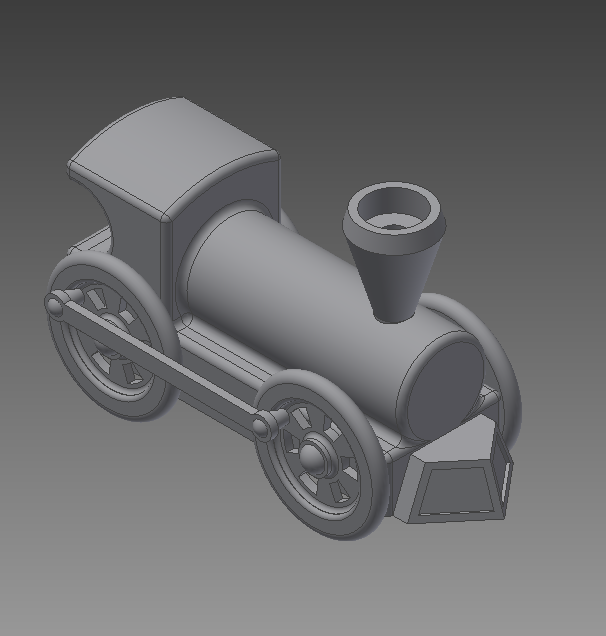

Project 4.1 - Train
IED - February 25, 2016

The objective of this project was to create a model of an antique train. I was the sole designer for
this project, so I modelled the train. Through this project, I learned how to use Autodesk Inventor to model 3D objects, create drawings,
and assemble multiple parts into one a single file. Some challenges I faced during this project included learning Autodesk Inventor's interface
and having my files deleted from my computer without a backup.